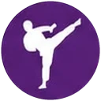
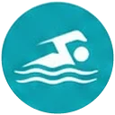
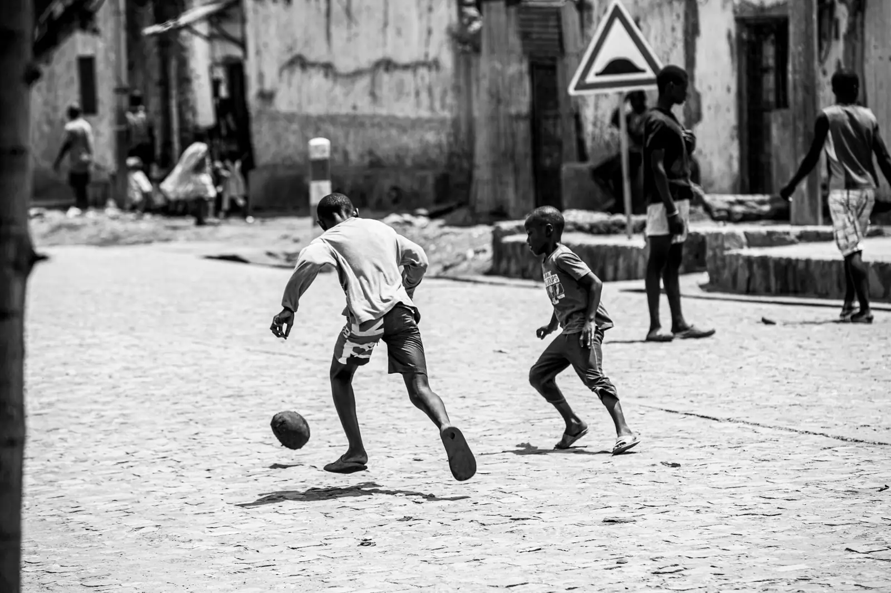
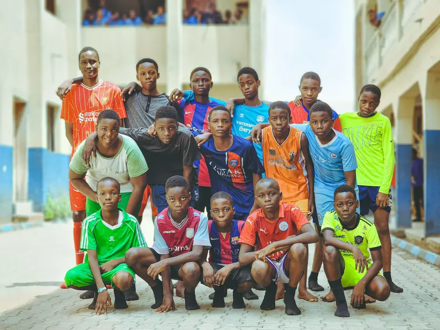
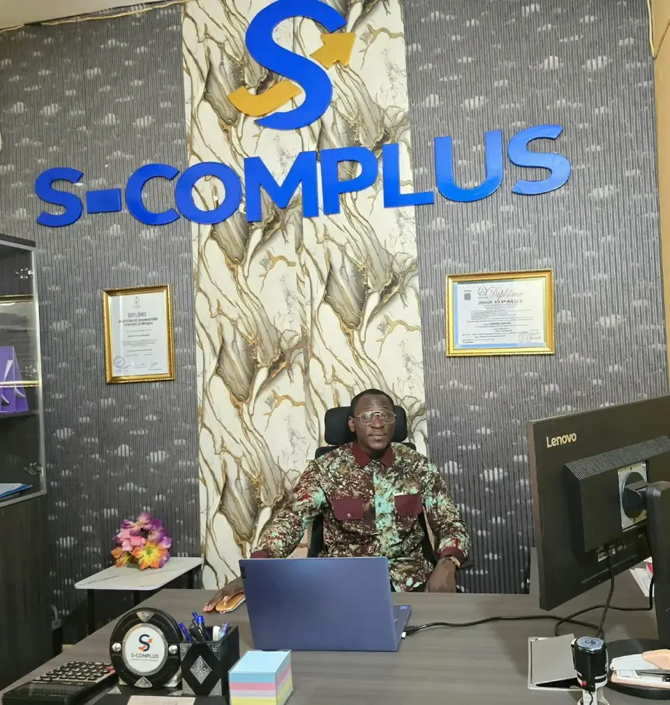
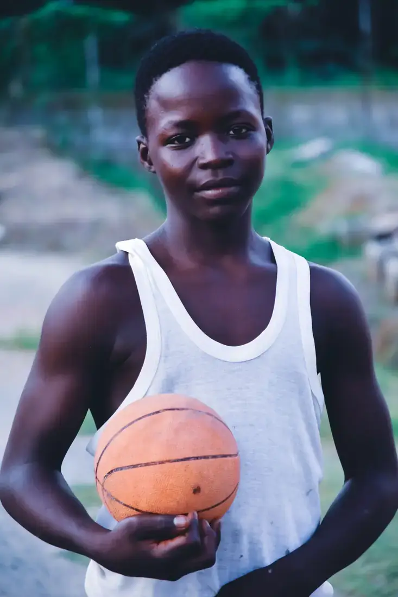
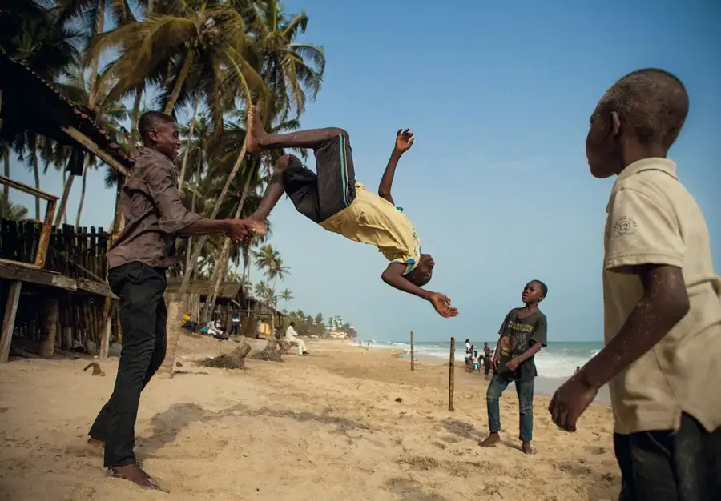
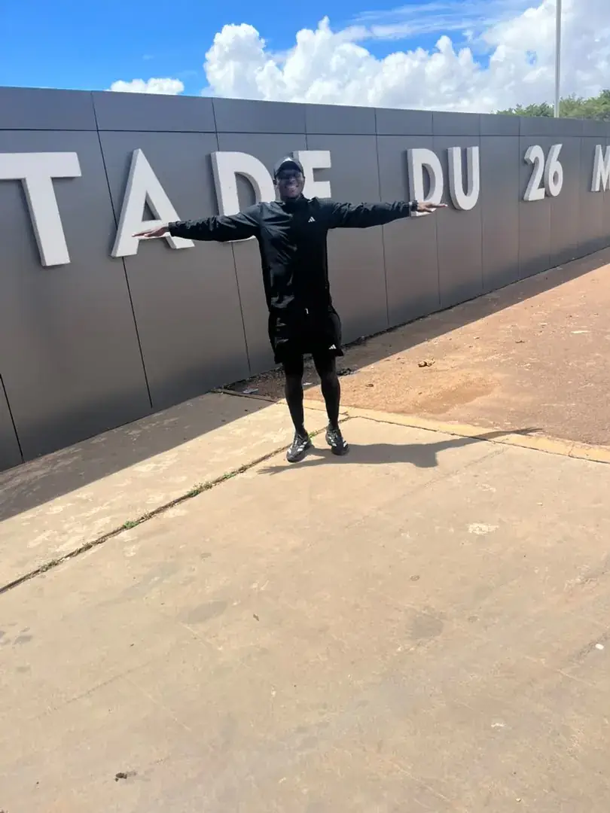
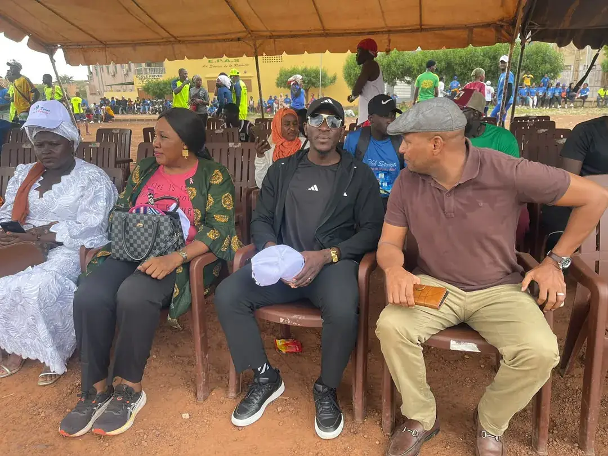
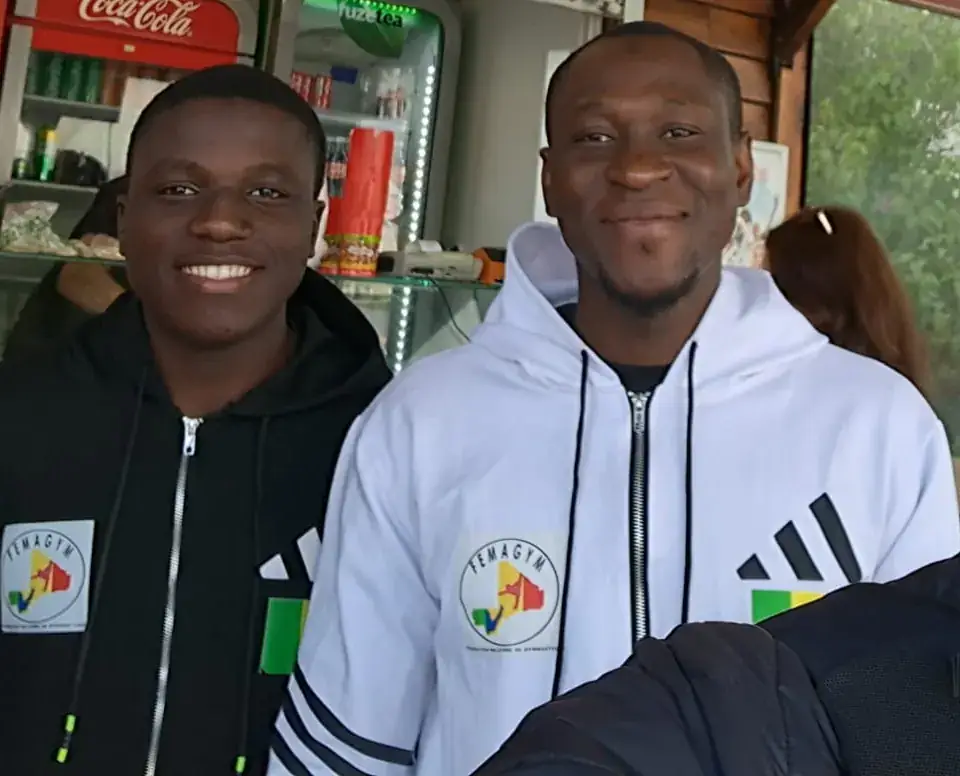

Révéler les talents, bâtir les champions.
Nous détectons, formons et accompagnons les jeunes talents du Mali, du terrain de quartier jusqu’au haut niveau.
Nous contacter
Arts martiaux
Sports aquatiques Autres sports
Un rêve. Un terrain. Une blessure. Et plus personne autour. Combien de talents se perdent ainsi ? Chez SC+, aucun talent ne marche seul.
Démarrer la conversationLe terrain parle plus fort que les mots.
De la détection à la signature, des tournois de quartier aux grands événements : nos actions racontent des histoires qui durent au-delà du match.
L’exigence du haut niveau. L’âme du Mali.
Un accompagnement sur mesure pour chaque profil : sportifs, clubs, fédérations, sponsors et partenaires.
-
Pour les jeunes talents
- Détection et promotion des jeunes talents
- Formation, suivi et accompagnement
- Gestion de carrière, joueurs et entraîneurs
-

Pour les clubs & fédérations
- Conseil aux clubs, académies et fédérations
- Organisation de compétitions et d’événements
- Structuration et montage de projets
-

Pour les sponsors & partenaires
- Recherche de clubs, sponsors et partenaires
- Dossiers de partenariat et négociation
- Partenariats nationaux et internationaux
Les disciplines que nous accompagnons
- Football

Basketball
Gymnastique- Athlétisme
- Arts martiaux
- Sports aquatiques
- Autres sports
Filiale de S-ComPlus SARL, SC+ Talent & Sports professionnalise le sport au Mali et en Afrique. Nous relions sportifs, clubs, fédérations, sponsors et investisseurs, de la terre battue du quartier jusqu’aux grands stades.
Sur le terrain
S-ComPlus SARLMaison mère

Stade du 26 MarsBamako

Événement sportifMali

FEMAGYMDéplacement
Prêt à jouer au plus haut niveau ?
Démarrer la conversationDonnons vie à votre projet
FAQ
Avec qui travaillez-vous ?
Sportifs amateurs et professionnels, jeunes talents, entraîneurs, clubs, académies, fédérations, organisateurs d’événements, sponsors, institutions et investisseurs.
Accompagnez-vous les jeunes talents ?
Oui. La détection, la formation et le suivi des jeunes sportifs sont au cœur de notre mission, avec un cadre structuré pour progresser.
Quelles disciplines suivez-vous ?
Football, basketball, gymnastique, athlétisme, arts martiaux, sports aquatiques et d’autres sports.
Organisez-vous des compétitions et des événements ?
Oui : championnats, tournois, stages, rencontres professionnelles et cérémonies sportives.
Qui est derrière SC+ Talent & Sports ?
SC+ Talent & Sports est une filiale de S-ComPlus SARL, basée à Bamako, au Mali.